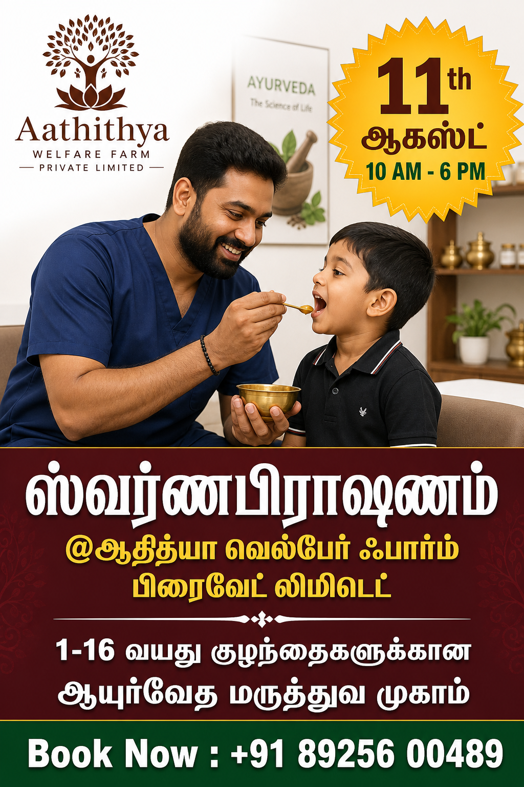

Swarnapashnam
Nurturing Strong Healthy children

Swarnapashnam (also known as Swarna Prashana) is an ancient wellness practice described in Indian Siddha and Ayurvedic traditions, specially designed for children. It involves the careful administration of purified gold (Swarnam) blended with select herbal formulations, traditionally given to children to support immunity, strength, memory, and overall development. This sacred practice has been followed in India for thousands of years as a preventive and promotive health measure.
In ancient India, Swarnapashnam was commonly administered to children from royal and aristocratic families to ensure robust health, sharp intellect, and longevity. The formulation is prepared and administered following strict traditional methods and auspicious timings. One such powerful and highly recommended time is Poosa Natchithram, which is believed to enhance the absorption and effectiveness of the medicine according to Siddha wisdom.
At Aaththiya Wellness Centre, we honor this timeless tradition and offer Swarnapashnam as part of our mission to promote holistic, natural, and preventive healthcare for children—contributing to healthier families and a healthier society.
Swarnapashnam in Indian Siddha Tradition

In Siddha medicine, Swarnam (gold) is regarded as a powerful rejuvenator when properly purified and processed. Texts describe its ability to balance the body’s energies, enhance vitality, and support long-term wellness. When combined with herbs known for immune support and cognitive development, Swarnapashnam becomes a gentle yet profound wellness supplement for growing children.
The practice emphasizes preventive care, strengthening the child from within rather than treating illness after it appears. This philosophy aligns deeply with Siddha medicine’s core principle: “Prevention is the best cure.”
Why Is Swarnapashnam Necessary for Children?
- Children today are exposed to changing lifestyles, environmental stressors, and frequent infections.
- Early immunity building plays a vital role in long-term health.
- Swarnapashnam supports natural growth, mental clarity, and resilience during formative years.
- It helps lay a strong foundation for physical, mental, and emotional well-being.
Benefits of Swarnapashnam
- Enhances natural immunity
- Supports healthy growth and development
- Improves memory, concentration, and learning ability
- Aids digestion and metabolism
- Helps reduce frequent infections and illnesses
- Promotes overall strength and vitality
- Supports balanced physical and mental wellness
How Does Swarnapashnam Support Overall Wellness?
Swarnapashnam works by gently nourishing the body at a cellular level. The purified gold and herbal ingredients are believed to stimulate the immune system, support brain development, and enhance digestive fire (Agni). When administered regularly and at auspicious times like Poosa Natchithram, the body is said to better absorb and utilize its benefits, leading to sustained wellness and resilience.
Administration on Poosa Natchithram
According to Siddha tradition, Poosa Natchithram is considered highly favorable for administering Swarnapashnam. The cosmic and natural energies during this star period are believed to amplify the effectiveness of the formulation, making it an ideal time for intake.
Our Commitment at Aaththiya Wellness Centre
Through Swarnapashnam, Aaththiya Wellness Centre is committed to nurturing healthier children using time-tested Siddha wisdom. Our goal is to support holistic child wellness that benefits families, communities, and humanity as a whole.
The most popular questions to discuss Wellness
Swarnapashnam is traditionally given to children from infancy up to 16 years of age, under proper guidance.
Yes, when prepared and administered correctly by trained Siddha practitioners using purified ingredients, it is considered safe.
No. Swarnapashnam is a complementary wellness practice and should not replace medical care or vaccinations.
In Siddha medicine, purified gold is believed to act as a rejuvenator, supporting immunity, vitality, and cognitive functions.
Most children can, but a basic consultation is recommended to ensure suitability.